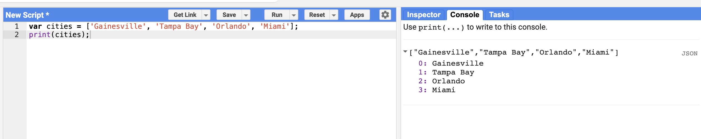

Lists (arrays) let you keep related values together. In Earth Engine, lists are crucial for handling band names, date ranges, or sets of sites without writing repetitive code.
Learning objectives
- Create lists with square brackets and comma-separated values.
- Access items by index using
.get(). - Understand zero-based indexing and mixed data types.
- Use lists in simple Earth Engine operations.
Why it matters
Lists let you pass multiple bands, dates, or sites around without rewriting code. They are the
foundation for iterating with .map() later in the course.
Quick win: make and inspect a list
Run this in the Code Editor console:
var cities = ['Gainesville', 'Tampa', 'Orlando', 'Miami'];
print('Cities list', cities);What you should see
A "List" in the console with indices 0, 1, 2, 3 next to each city name.

Accessing items
Lists are zero-indexed: the first item is index 0.
var first = cities.get(0);
var third = cities.get(2);
print('First city:', first);
print('Third city:', third);Key concepts
- Syntax:
[item1, item2, item3] - Zero-indexed: first item is 0, not 1.
- Mixed types: strings, numbers, and even other lists can live together.
- Immutable in EE: Earth Engine lists return new lists when changed.
Try it: customize
Create a list of satellite IDs (for example, ['LANDSAT/LC08/C02/T1_L2', 'COPERNICUS/S2_SR']) and print it.
Make a list of years and use .get(0) and .get(1) to pull specific ones.
Build a mixed list: ['Everglades', 25.3, -80.9] and print it.
Common mistakes
- Forgetting commas between items.
- Assuming indexing starts at 1 instead of 0.
- Using square brackets with Earth Engine
ee.Listwithout wrapping: useee.List([...])when you need a server-side list.
Quick self-check
- What index retrieves the second element in a list-
- How do you create a list in JavaScript-
- When should you use
ee.Listinstead of a plain list-
Next steps
- Objects to store labeled data.
- Functions to process lists with
.map(). - Client vs Server to know when lists must be server-side.
Going Deeper: EEFA Book
This module gives you the foundation. To explore further, see Chapter F1.0 (JavaScript and the Earth Engine API) in the Cloud-Based Remote Sensing with Google Earth Engine (EEFA Book).